Introducción

Una vez se conoce cuáles son los defectos es importante clasificar los niveles para las actividades de inspección y determinar las diferentes acciones a definir para mejorar o mantener la calidad de la producción de las prendas. Los resultados de las inspecciones se deben presentar en informes donde se logren visualizar y calcular indicadores que permitan medir los resultados.
Las siete herramientas de calidad son las técnicas básicas usadas en el control de calidad, su propósito es analizar, medir y controlar, conforme a las fases de Seis sigma; permiten conocer las causas de los defectos y así establecer acciones correctivas y de mejora de la calidad. Estas herramientas mediante el uso de tablas y diagramas permiten observar de manera concreta los problemas presentados, con los datos recolectados.
1. Maquinaria y equipos en diferentes líneas de producción.
Los errores presentados en las operaciones y en los procesos realizados con cada prenda, se deben catalogar, con el fin de realizar los análisis necesarios y así corregir de forma rápida, creando estrategias que generen cambios concretos al ir directamente a la operación y al proceso a ajustar. La empresa puede generar el listado de defectos en donde se diferencien los niveles de estos con el fin de aceptar o rechazar las prendas que comprenden un lote.
1.1. Nivel del defecto
Una vez se desarrolla una referencia, se determinan sus especificaciones. En el proceso de producción estas pueden variar y se deben establecer tolerancias con las cuales se permita un margen y se admitan dichas variaciones.
Es así como se hacen necesarios los estándares de calidad para poder evaluar los niveles de calidad de una característica cualitativa o cuantitativa a las cuales corresponden tributos o variables respectivamente.
En relación con lo anterior, para evaluar la calidad de las prendas se deben establecer niveles de defectos para poder medir el Nivel de Calidad Límite (NCL), teniendo claro todos los defectos que se pueden presentar en una prenda y el nivel del defecto máximo para así decidir si se acepta o se rechaza la muestra o el lote.
Defecto menor
Es la discrepancia que existe del estándar, pero a su vez no afecta la capacidad de uso de la prenda, se puede incurrir en costos pequeños y adicionar operaciones para corregir el defecto, estos causan insatisfacción en el cliente. Algunos de los errores más comunes son las costuras sin pulir, es decir hebras de hilos sin cortar; también los colores de los hilos tienen un tono un poco diferente al especificado. Si el defecto no se corrige de la mejor forma se convierte en defecto mayor.
Defecto mayor
Los defectos mayores causan que la prenda no funcione de acuerdo con su diseño, provocan que los productos no puedan ser vendidos y se incurren en costos para su reproceso. Algunos ejemplos comunes son agujeros, discrepancias en medidas que causen asimetrías como una manga más larga que otra. En el caso que no se pueda realizar la óptima corrección el defecto se convertirá en crítico.
Defecto crítico
Los defectos críticos, son considerados inseguros y/o peligrosos al usarse y pueda lastimar al consumidor, además reducen la confianza en el uso de la prenda y se incurre en un alto costo en reprocesos o es muy difícil poder recuperar la funcionalidad de esta. Un ejemplo que se puede presentar es un alfiler en la prenda.
1.2. Ubicación del defecto
Para establecer la causa del defecto, es primordial ubicar el lugar donde se presentó el defecto, de allí la importancia de la trazabilidad en el proceso de confección de las prendas.
Teniendo en cuenta las áreas y los puntos de control en la planta de confección se clasifica la ubicación del defecto para así mismo establecer responsabilidades y conforme a lo mencionado definir las acciones de mejora.
1.3. Uso de tablas militares
Durante la segunda guerra mundial, Dodge y Roaming desarrollaron la técnica de muestreo de aceptación, aplicada a las balas. El plan estándar de muestreo que contiene el procedimiento y las tablas se nombra MIL STD 105D, aunque en el año de 1995 se rediseñó y cambio su nombre a ANSI/ASOCZ1.4, pero se sigue refiriendo a lo mismo. La norma ISO 2859 estandariza los procedimientos de muestreo por aceptación, en las inspecciones por atributos, donde se aplican las tablas militares y por lo tanto los NCA o AQL.
Para realizar un plan de muestreo por atributos, simple, doble o múltiple es importante tener en cuenta la cantidad de cada lote, y la clasificación de los defectos, sean menores, mayores y críticos, para establecer el nivel de aceptación de la prenda. Además, se debe definir el nivel de inspección, se utiliza el general que corresponde al normal del tipo II. Los niveles especiales de inspección se utilizan en pruebas de laboratorio destructivas o en productos defectuosos.
A continuación se observa la tabla militar estándar.
Tabla militar 1
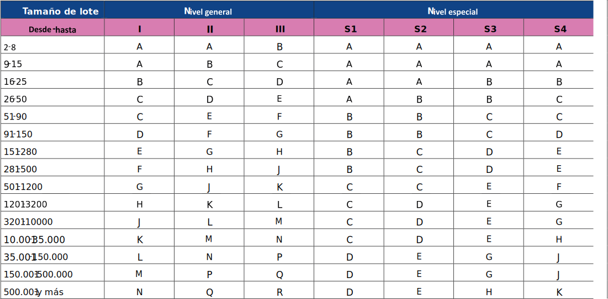En la tabla siguiente se observa la distribución para los niveles de aceptación AQL
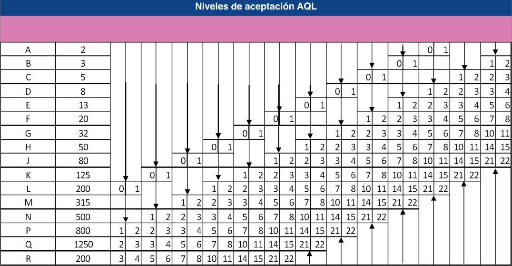A continuación se mencionan los pasos necesarios para el uso de tablas militares para realizar un plan estándar de muestreo, de acuerdo con lo indicado en la norma ISO 2859.
Con la tabla # 1 seleccionar la fila según el tamaño del lote.
Según la fila elegida, se asigna el nivel en la columna de inspección general conforme a:
I: Reducida o baja, es permisiva, tamaño de muestra pequeña.
II: Normal o general, tamaño de muestras es mayor.
III: Rigorosa, estricta o severa, tamaño de muestra es más grande.
Teniendo la letra resultado del cruce de tamaño de lote y nivel de inspección, que corresponde a un código, se procede en tabla #2 a seleccionar columna de tamaño de muestra según columna de código.
Teniendo los niveles de aceptación de los defectos, en donde conviene establecer:
Defectos menores NCA entre 2,5% a 4%, depende del valor del producto, es decir NCA es alto.
Defectos mayores NCA entre 1,5% a 2,5%, término medio de NCA.
Defectos críticos NCA entre 0% a 0,65%, bajo NCA.
Una vez ubicado en columna el nivel de aceptación se cruza con el tamaño de la muestra, donde se concluye el número de las unidades con las que el lote es aceptado o rechazado.
Cuando se selecciona una inspección reducida y un lote es rechazado se procede a cambiar el nivel de inspección a normal.
En el caso de estar realizando nivel de inspección normal y dos lotes de cinco no son aceptados, por ejemplo, se debe cambiar el nivel de inspección a rigurosa, pero en caso contrario si las inspecciones de cinco lotes seguidos son aceptadas se puede seguir con el mismo nivel de inspección.
2. Maquinaria y equipos en diferentes líneas de producción.
Los informes hacen parte del sistema de información de la empresa, se relacionan directamente con los procesos de calidad, con el sistema de comunicación con todas las áreas de la empresa, lo que permite realizar un adecuado seguimiento a los procesos de control de calidad y una adecuada toma de decisiones en la empresa.
Los informes de calidad son el resultado de las inspecciones y las auditorías, estos se presentan teniendo en cuenta la siguiente estructura:
2.1. Indicadores de calidad
En alusión de la frase del físico Kelvin, “Lo que no se mide no se controla, lo que no se controla no se mejora, y lo que no se mejora, tiende a desaparecer”, los indicadores son indispensables para determinar el seguimiento de las metas y objetivos propuestos, con miras a la satisfacción del cliente, porque permiten medir de manera tangible y cuantificable, los resultados de calidad de los procesos, permitiendo su evaluación, por lo tanto muestra los niveles de cumplimiento de los requisitos de calidad. Con lo anterior se concluye que un indicador es un valor, resultado de una operación matemática donde se comparan dos o más características de calidad, cuyo valor se analiza para la toma de decisiones.
Las características de los indicadores son las siguientes:
Realistas, es decir relacionados con las actividades actuales de calidad de la empresa.
Representativos de un área o de la empresa y de fácil interpretación.
Efectivos para que logren impacto.
Accesibles a las personas involucradas en la ejecución del proceso.
Sencillo de calcular y gestionar.
Los indicadores pueden ser generales, específicos o ponderados; el procedimiento para aplicarlos es:
Seleccionar los indicadores a establecer en los procesos críticos, es decir los más importantes o donde se encuentren niveles bajos de calidad.
Definir los datos a analizar del proceso.
Nombrar la persona responsable de gestionar el resultado, el indicador puede ser del proceso o del equipo de calidad, o de ambos.
Realizar el cálculo del indicador, especificar la periodicidad de realizarlo.
Utilizar gráficos para visualizar resultados del indicador.
Presentar en informes o publicar en carteleras de la empresa.
Para evaluar los resultados de los niveles de no calidad, es importante cuantificar los reprocesos realizados en un lote, una referencia, o una producción, con el fin de poder establecer acciones de mejora que reduzcan los defectos.
Para su cálculo se tiene en cuenta la cantidad del lote, cantidad de reprocesos y las causas del reproceso. El indicador se calcula de la siguiente manera:
Según las causas se pueden agrupar para conocer su incidencia en el total de los reprocesos.
Se habla del indicador aceptable de rechazo en el caso de los muestreos por atributos, es decir, antes de la salida de las prendas al cliente.
Con el fin de evaluar el nivel de devoluciones de las prendas por partes del cliente, los cuales afectan los costos de la empresa pues son costos de no calidad. Se presenta el siguiente indicador:
2.2. Técnicas de calidad: 7 herramientas de control de calidad
Con respecto a la gestión de calidad, se tienen técnicas básicas, las cuales consisten en medir las características utilizando la estadística, una vez se recopilan los datos, se analizan utilizando las herramientas para visualizar su variabilidad y poder soportar el proceso de toma de decisiones. A pesar de existir gran variedad de técnicas y herramientas las 7 básicas son:
2.2.1. Hoja de verificación o chequeo
Es una herramienta donde se registran los datos de manera organizada, para realizar los análisis correspondientes de calidad, se realiza con el fin de recolectar y utilizar los datos para posteriores análisis, reducir los riesgos asociaos a la toma de decisiones y acelerar la detección y resolución de problemas, además de apoyar otras herramientas estadísticas de calidad.
El procedimiento de elaboración es el siguiente:
Definir la información requerida, los datos y sus características.
Definir la mejor presentación de los datos en un formato.
Utilizar símbolos, números, letras para registrar datos.
Realizar instructivo para dar a conocer el diligenciamiento de la hoja
Crear tablas para resumir datos y clasificarlos para luego desarrollar gráficos para visualizar los resultados.
Interpretar, analizar y aplicar la información según el objetivo planteado.
Se conocen con anterioridad las hojas de inspección de producto en proceso, inspección de producto terminado, inspección de trazo y corte, las cuales recopilan información en los procesos relacionados de los defectos presentados, pero se pueden crear otras, según las necesidades de cada proceso y las directrices de la empresa.
Ejemplo. En la siguiente tabla se observa una hoja de verificación diligenciada para una inspección de producto terminado.
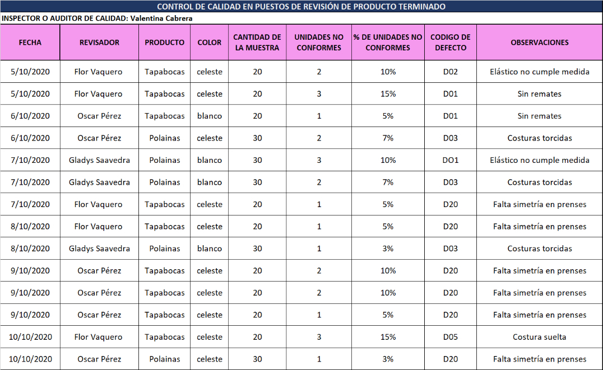2.2.2. Histograma
Con el uso del histograma se pueden representar los datos, visualizando su dispersión con respecto a la media. Se utiliza con el fin de mostrar la variabilidad de los datos y analizar el comportamiento del proceso. Pertenece a la fase medir de seis sigma.
Esta es una gráfica que permite analizar la distribución de la información o datos de un proceso en contraste con el número de ocurrencias de cada valor, la finalidad es diagnosticar rápidamente la panorámica del comportamiento de un proceso a través del tiempo, además permite ver la variación de los datos y analizar el comportamiento de un proceso.
El procedimiento para realizar un histograma es el siguiente:
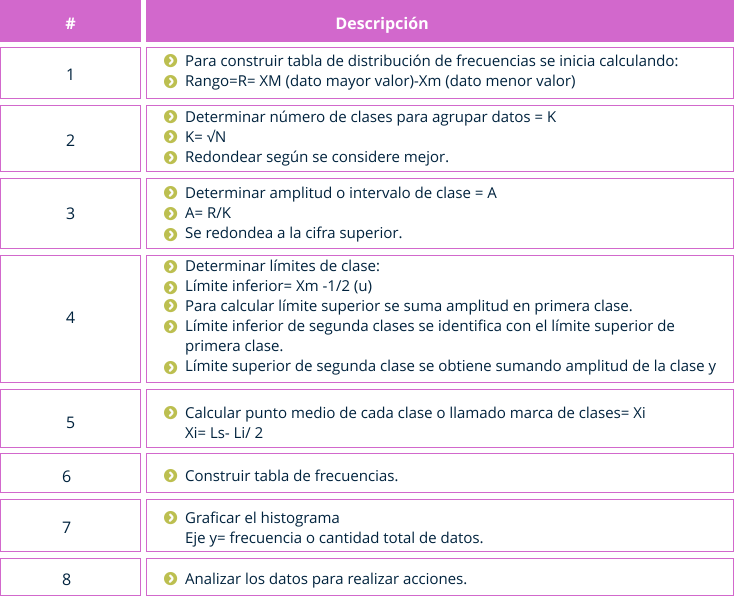En el siguiente gráfico podrá observar un histograma diligenciado para la cantidad de defectos en rollos de tela.
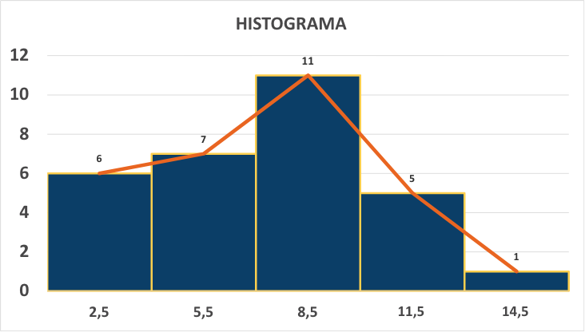2.2.3. Diagrama causa-efecto
También llamado de espina de pescado por su forma, creado por Kaoru Ishikawa como herramienta en los círculos de calidad. Se utiliza para representar gráficamente los factores que afectan un problema de calidad; se definen las principales causas y luego las causas derivadas de las principales, consiste en una flecha horizontal apuntando hacia el problema y las seis principales flechas en diagonal a 30°, orientadas hacia la flecha horizontal, de cada flecha se van creando a medida que se va analizando nuevas flechas, que corresponden a causas secundarias.
Esta herramienta hace parte de la fase definir de Seis sigma, uno de sus objetivos es representar gráficamente las causas y efectos de un problema par ayudar al equipo de trabajo a analizarlas y eliminarlas.
El procedimiento para desarrollar el diagrama es el siguiente:
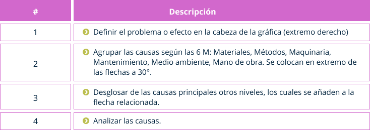La herramienta es automatizada en los programas especiales de análisis de datos.
En el siguiente gráfico podrá observar un diagrama de causa efecto diligenciado para las causas defectos de calidad en las camisetas tipo polo.
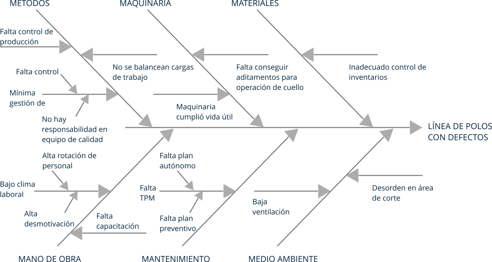2.2.4. Diagrama de Pareto
Su nombre deriva del apellido del economista italiano, quien formuló su principio, que consiste en determinar que muy pocas causas son las responsables del 80% del total de los defectos, y muchas causas secundarias son responsables del 20% del total de los defectos, por consiguiente, se habla de pocos vitales que constituyen la parte más grande, el porcentaje de contribución más alto con respecto al total y muchos triviales son factores numerosos pero contribuyen solo con una pequeña parte o con un bajo porcentaje respecto al total.
Para visualizar lo anterior mencionado se desarrolla un gráfico de barras para representar de manera ordenada los pocos vitales (80%) y los muchos triviales (20%).
El objetivo del diagrama es poder visualizar los problemas o defectos que inciden más, con el fin de priorizar las causas para su atención, teniendo en cuenta dicha clasificación. Hace parte de la fase análisis de seis sigma.
El procedimiento para realizar diagrama de Pareto se observa en la siguiente tabla:
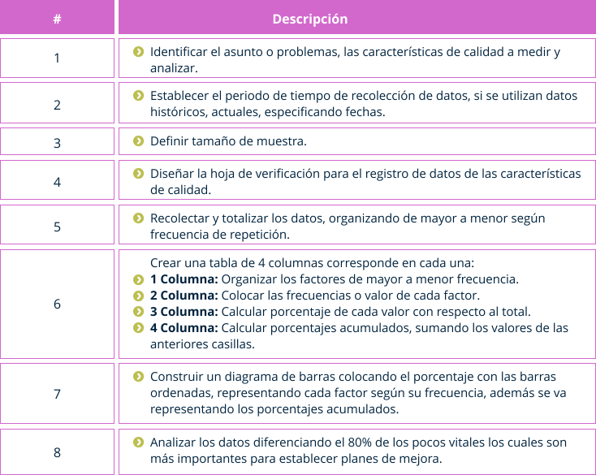La herramienta es automatizada en los programas especiales de análisis de datos. En el siguiente gráfico se observa un diagrama de Pareto diligenciado para las causas defectos de calidad en tapabocas.
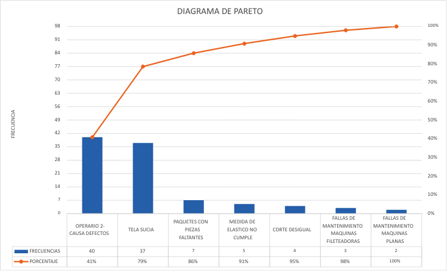2.2.5. Estratificación
En relación con el manejo de la información recolectada, debe estar clasificada en grupos que tengan características comunes, los cuales pueden ser en relación con su origen o los efectos generados. Algunas categorías o estratos pueden ser materiales, maquinarias, productos, fechas, proveedores, lotes, localización del defecto, tipo de defecto.
Sirve de base para la construcción de histogramas y diagramas de Pareto. Es útil para identificar causas en variación de los datos, las causas de los problemas y poder analizar los valores promedio en comparación con los valores en cada categoría o estrato.
El procedimiento para realizar los gráficos se puede ver en la siguiente tabla:
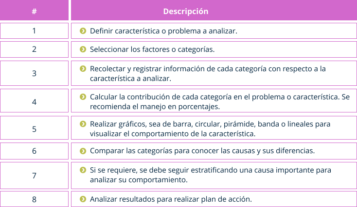En el siguiente gráfico podrá observar dos tipos de gráficos de estratificación, diligenciados para las causas de rechazo en los módulos de producción.
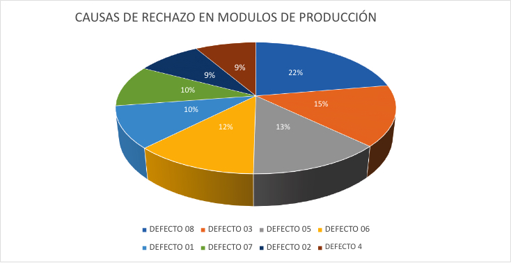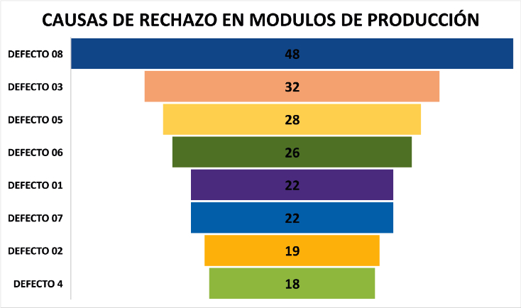2.2.6. Diagrama de correlación
Llamado también de dispersión, investiga si existe relación entre dos características de calidad de un proceso. La característica de la abscisa que corresponde al eje en X representa la característica que se interpreta como causa, y la característica de las ordenadas, es decir en el eje Y corresponde a la variable interpretado como efecto.
Es útil en las características cuya relación se compruebe con este gráfico, debido que al controlar una, por consiguiente, se controla la otra característica.
Hace parte de la fase analizar y mejorar de la herramienta Seis sigma y permite observar la relación entre dos variables y la intensidad de la relación, así como facilita el reconocimiento de correlaciones.
Los resultados de la correlación pueden ser:
Correlación lineal positiva: al aumentar el valor de una característica se aumenta la otra.
Correlación lineal negativa: al aumentar el valor de una característica se disminuye la otra.
Correlación no lineal: existe relación entre las características de forma curva.
Sin correlación: no existe relación alguna entre las características.
El procedimiento para realizar el diagrama se observa en la siguiente tabla:
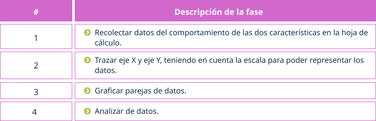Estos gráficos se pueden realizar en el programa de office Excel.
En el siguiente gráfico podrá observar un diagrama de correlación diligenciado para las variables tiempo de capacitación y cantidad de defectos.
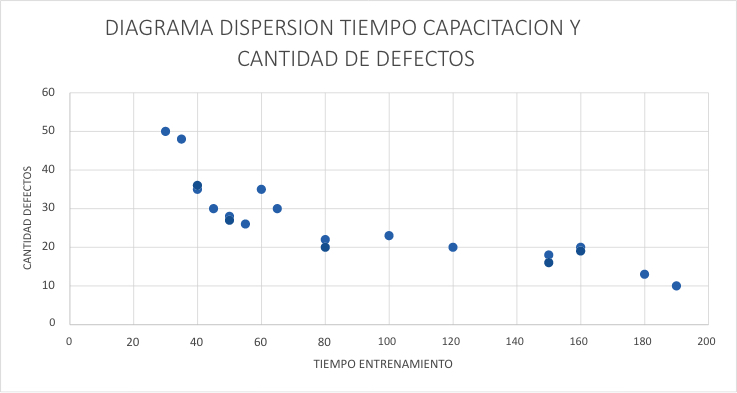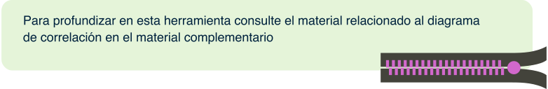2.2.7. Gráfico de control
Esta herramienta representa de manera organizada en el tiempo, datos que corresponden a los resultados de una característica de calidad en un periodo de tiempo. Con el fin de visualizar el comportamiento de la característica a medir del proceso, entre los límites de control establecidos para realizar seguimiento. Pertenece a la fase analizar y controlar de la herramienta seis sigma.
El gráfico comprende el eje X que corresponde al tiempo, el eje Y representa la característica medible. Además, contiene 3 líneas horizontales las cuales corresponde a:
LC: Línea central, es el promedio del proceso.
LCS: Límite de control superior.
LCI: Límite de control inferior.
El espacio entre los límites marca el intervalo dentro del cual se espera que desarrolle el proceso evaluado. los datos resultantes de la medición del desempeño observado del proceso en determinados periodos de tiempo se marcan con puntos y se unen en el gráfico, para realizar el análisis.
Además de visualizar el comportamiento del proceso en el tiempo la herramienta permite determinar el estado de control de un proceso, determinar las muestras que caen dentro o fuera de los límites de control, determinar las trayectorias anormales en un proceso estandarizado y ajustar el proceso.
Se pueden desarrollar gráficos de control por variables o atributos, los cuales son:
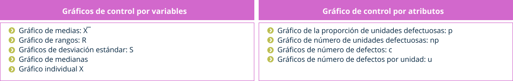Los gráficos utilizados comúnmente son de medias y de rango de manera simultánea o los gráficos de medias y desviación estándar.
El procedimiento para realizar gráficos de control se observe en la siguiente tabla:
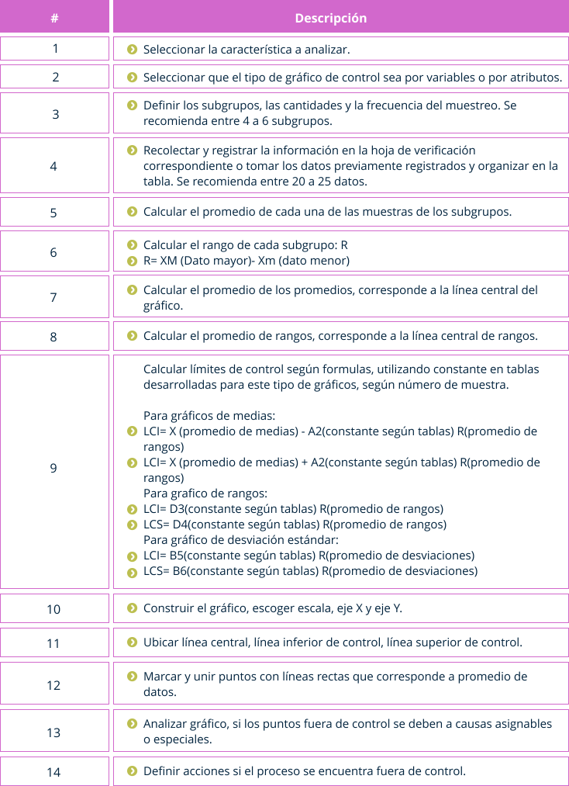Estos gráficos se pueden realizar en el programa de office Excel.
En las siguientes imágenes podrá observar gráficos de control de medias, rangos y desviación estándar, diligenciados para la cantidad de defectos en las referencias.
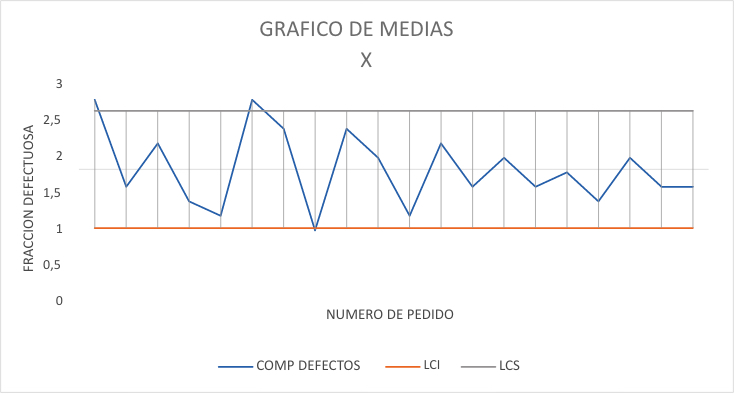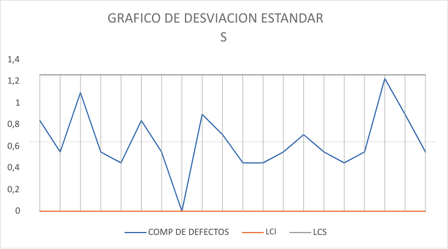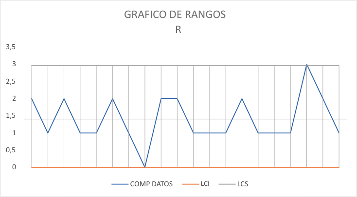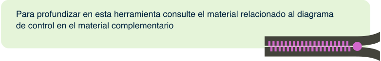2.3. Plan de acciones de calidad
El plan de calidad de acuerdo con la norma ISO 9001:2015 “Es una especificación de los procedimientos y recursos asociados a aplicar, cuándo deben aplicarse y quién tiene que aplicarlos a un objeto específico”. Esto para el cumplimiento de requisitos, con el fin de validar nuevos productos o procesos, para optimizar recursos o para implementar un sistema de calidad.
Una vez se han analizado las causas de los problemas o defectos; en el comportamiento de los procesos se requiere definir un plan donde se especifiquen los procedimientos, los recursos para lograr los cambios requeridos con el fin de mejorar la calidad, para ello es necesario definir quienes, cuándo, dónde y qué recursos se necesitan para intervenir el proceso o producto.
Los pasos para desarrollar un plan de calidad son:
Identificar las necesidades de un plan de calidad.
Especificar requisitos de calidad, recursos, especificaciones técnicas, normas.
Definir alcance y tiempos requeridos.
Estructurar el plan: recopilar documentación, asignar responsables, definir acciones.
Implementar plan.
Realizar seguimiento y mejoras.
Contenido de un plan de calidad:
Alcance.
Entradas requeridas: requisitos del cliente, especificaciones técnicas, normativas.
Definir objetivos y metas.
Establecer responsabilidades.
Definir control de información: documentos, registros.
Definir recursos y su manejo.
Definir las acciones a desarrollar en los productos o en los procesos (diseño y desarrollo, compras, producción).
Establecer los tiempos de las acciones.
Establecer seguimiento y mediciones: herramientas estadísticas de calidad, indicadores.
Especificar controles de producto no conforme.
Establecer auditorías.
Para establecer un plan de acción específico de calidad, y solucionar un problema o corregir un defecto es necesario, diseñar las acciones, definir los responsables y los tiempos de ejecución, así como el seguimiento para evaluar si se corrigió el problema definitivamente.
2.3.1. Acciones correctivas de calidad
Conforme la norma ISO 9001:2015 es "la acción para eliminar la causa de una No Conformidad y evitar que vuelva a ocurrir", por lo cual la acción debe eliminar las causas de la no conformidad al realizar las acciones necesarias que generen los cambios que mejoren la calidad, los cuales deben evaluarse.
Es importante comprender la diferencia entre acción correctiva y la corrección de la no conformidad; debido a que la segunda se refiere a corregir el defecto, sin corregir las causas que genera el problema.
Las acciones deben estar definidas en el plan de calidad una vez se realiza el análisis de los problemas o defectos con las herramientas de calidad.
Para aplicar las acciones correctivas se requiere:
Establecer los tiempos para aplicarlas, lo cual debe ser en el menor tiempo posible.
Minimizar las consecuencias de los problemas o defectos, por ejemplo, realizar descuento al cliente por los defectos de la prenda.
Evaluar si es realmente necesario la aplicación de la acción.
Diseñar acciones en equipo para obtener una solución acertada.
Implementar plan de acción especifico de calidad, es decir realizar los cambios.
Realizar seguimiento de los cambios, evaluando los cambios.
Ejemplo. En la producción de camisetas se recibieron varias devoluciones debido a que se migró el color en el sesgo de escote y mangas, se detectó a partir del análisis que el problema era en un lote.
Las acciones correctivas que se realizaron fueron:
Recoger el lote del problema para que no se siguieran vendiendo.
Realizar inspecciones en todas las camisetas del lote.
Realizar pruebas de laboratorio en los textiles que se van a producir en los siguientes lotes.
Utilizar herramientas de control estadístico e indicadores.
Analizar y realizar plan de acción.
2.3.2. Propuesta de acciones de mejora
Según norma ISO 9001:2015 el numeral de riesgos y oportunidades, habla de las acciones que se establezcan con el fin de lograr mejorar la calidad de la empresa, impactando en la planeación, aumentando indicadores de eficiencia o eficacia de las actividades del sistema de gestión de calidad.
Las acciones de mejora también deben estar estructuradas, dentro del plan de calidad, en donde se describan las acciones, los responsables y las fechas para implementarlas.
Los pasos para realizar las acciones de mejora son los siguientes:
Analizar los riesgos de los procesos.
Analizar los indicadores de los procesos.
Establecer la auditoría al sistema.
Recopilar las no conformidades.
Análisis de los problemas o defectos.
Implementación de las acciones de mejora según plan específico o de acción de calidad.
Realizar seguimiento de las acciones.
Evaluar el sistema de calidad con mecanismos como evaluar la satisfacción del cliente, sea interno o externo. Las evaluaciones deben ser frecuentes para conocer la mejora de la calidad en la eficiencia y eficacia de la empresa.
Es importante considerar que los problemas y defectos que se presentan en una empresa son oportunidades de mejora, las acciones que se emprendan deben impactar directamente en lograr los objetivos de calidad.
Glosario
AOQ=CPS:calidad promedio de salida. Es la calidad promedio que se obtiene después del proceso de inspección.
AOQL=LCPS:límite de calidad promedio de salida. Resultado de la peor calidad promedio que puede obtenerse en el proceso de la inspección.
AQL=NCA:siglas de las palabras en inglés de Level Aceptation Quality, nivel de calidad aceptable, es el porcentaje máximo de unidades aceptable para el proceso, el cual debe estar especificado en la ficha técnica, contrato, órdenes de compra.
Causas asignables:llamada también causa especial son las que varían de manera inusual un proceso, debido a que antes no se había presentado, no se había observado ni cuantificado.
Defecto:no cumplimiento de los requisitos de la prenda, desviaciones de los estándares de calidad de la prenda.
LTPD =NCL:traducción de las palabras de las siglas en ingles Lot Tolerance Proportion Defective, proporción defectuosa tolerable en el lote, es el peor nivel de calidad del lote que el cliente puede aceptar. También conocido como el Nivel de Calidad Límite. Nivel de calidad no satisfactorio, por lo tanto, debe ser rechazado el lote.
Rango:Es el intervalo comprendido entre el mayor y menor valor de un número de datos con el fin de medir su variación.
Neps:Pequeñas fibras gruesas en forma de puntos que se observan en el textil, es un defecto.
| Autor, (año del documento o material), Nombre del documento o material. | Tipo de material ( Video, capítulo de libro, articulo, otro) | Enlace del Recurso o Archivo del documento o material |
|---|---|---|
| Gutiérrez, S. (2020). Instructivo para desarrollar diagrama de Pareto. | Archivo Word | Descargar |
| Gutiérrez, S. (2020). Plantilla Pareto. | Archivo Excel | Descargar |
| Gutiérrez, S. (2020). Instructivo para desarrollar Histograma . | Archivo Word | Descargar |
| Gutiérrez, S. (2020). Plantilla Histograma. | Archivo Excel | Descargar |
| Gutiérrez, S. (2020). Niveles de defectos. | Archivo Word | Descargar |
| Gutiérrez, S. (2020). Instructivo para desarrollar diagrama de estratificación. | Archivo Word | Descargar |
| Gutiérrez, S. (2020). Plantilla Estratificación. | Archivo Excel | Descargar |
| Gutiérrez, S. (2020). Instructivo para desarrollar diagrama de control. | Archivo Word | Descargar |
| Gutiérrez, S. (2020). Plantilla gráfico control. | Archivo Excel | Descargar |
| Gutiérrez, S. (2020). Instructivo para desarrollar diagrama de correlación. | Archivo Word | Descargar |
| Gutiérrez, S. (2020). Plantilla correlación . | Archivo Excel | Descargar |
| Gutiérrez, S. (2020). Uso de tablas militares MIL STD 105D | Archivo Word | Descargar |
Referencias bibliográficas
Brand Arroyave, C. (2008). Control de calidad para medianas y pequeñas empresas. Itagüí. [s.n.]. Editor: Universidad Jaume I. (2006). Manual de control estadístico de calidad: teoría y aplicaciones [E-book]. Consultado 24 septiembre 2020, dehttp://www.digitaliapublishing.com.bdigital.sena.edu.co/a/14732/manual-de-control-estadistico-de-calidad---teoria-y-aplicaciones.
Evans, J., & Lindsay, W. (2015). Administración y Control de la calidad [E-book] (9th ed.). Cengage. Consultado 24 septiembre 2020, dehttp://www.ebooks7-24.com.bdigital.sena.edu.co/?il=786.
Gutiérrez Pulido, H. (2013). Control estadístico de la calidad y Seis Sigma [E-book] (3rd ed.). McGraw-Hill Interamericana. Consultado 24 septiembre 2020, dehttp://www.ebooks7-24.com.bdigital.sena.edu.co/?il=280.
Jaramillo Zapata, J. (1990). Control de calidad en la confección [E-book]. Servicio Nacional de Aprendizaje (SENA). Consultado 24 septiembre 2020, dehttps://hdl.handle.net/11404/4253.
Martínez Aguirre, G. (2012). La ingeniería en la industria de la confección. México. Editorial Trillas.
Pérez Marqués, M. (2016). CONTROL DE CALIDAD TECNICAS Y HERRAMIENTAS (1st ed.). México. Alfaomega grupo editor.
Pola Maceda, Á. (2009). Aplicación de la estadística al control de calidad. Marcombo.https://elibro-net.bdigital.sena.edu.co/es/lc/senavirtual/titulos/45842
Servicio Nacional de Aprendizaje (SENA). (1973). Programa de control de calidad. Unidad 1.5. Variabilidad de la calidad [E-book]. Consultado 5 octubre 2020, dehttps://hdl.handle.net/11404/6665.
Villamizar Figueroa, J. (1992). Técnicas básicas para el análisis de datos [E-book]. Servicio Nacional de Aprendizaje (SENA). Consultado 5 octubre 2020, dehttps://hdl.handle.net/11404/1907.
Fotografías y vectores tomados de https://www.shutterstock.com/ y https://www.freepik.es/
Licencia Creative Commons
CC BY-NC-SA
Ver licencia.